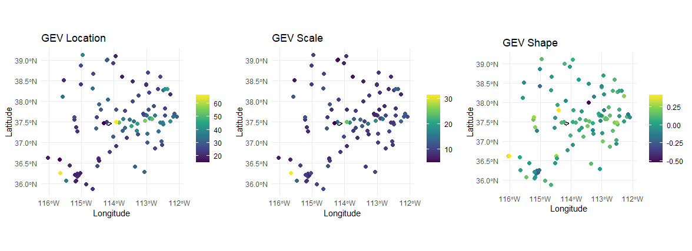
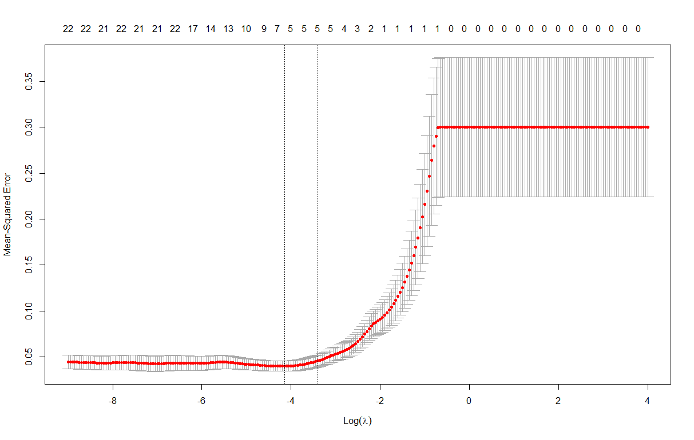
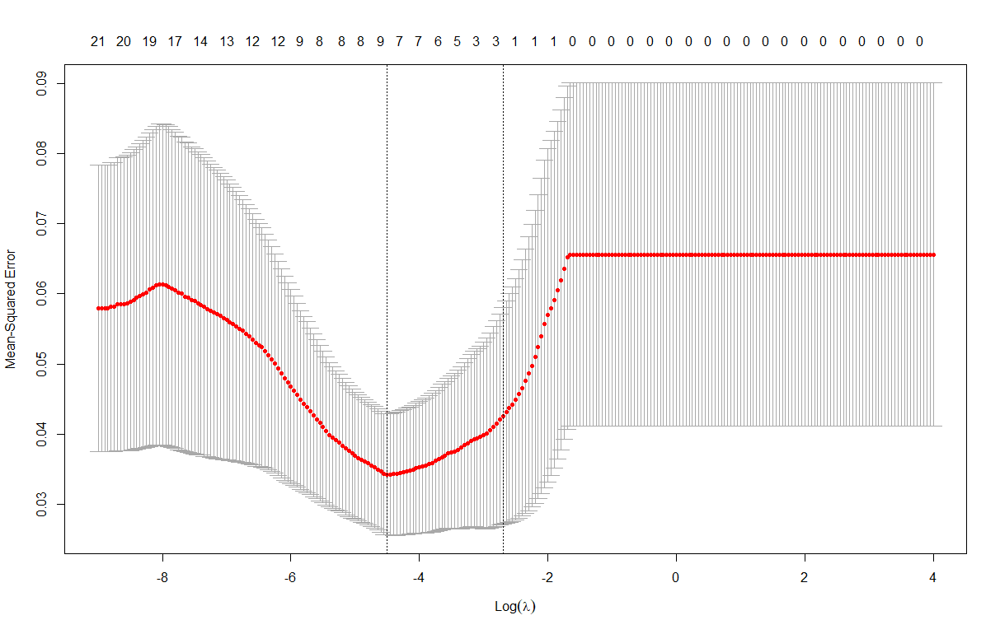
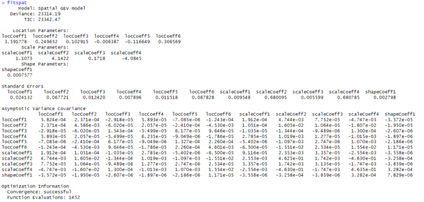
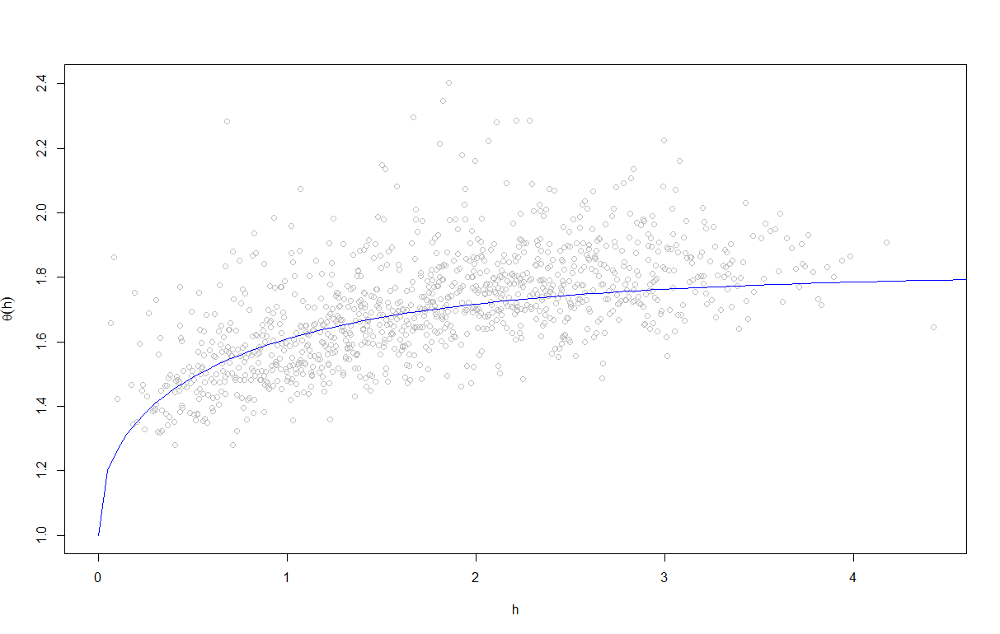
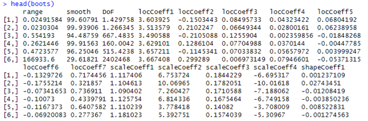

Chapter 3 Workflow for MSP Precipitation-Frequency
The following subsections describe the four-step workflow used to develop basin-average precipitation-frequency estimates with uncertainty using the RMCmsp library.
3.1 Step 1: msp_setup( )
As mentioned in the Introduction, the first function was created to set up the MSP workspace. Required inputs for the msp_setup( ) function include:
- Matrix of annual maximum precipitation, defined as
anmax.out2in Section 2.3. - Matrix of metadata corresponding to the annual maximum precipitation data set, defined as
df.meta.outin Section 2.3. - An RDS file containing the cropped PRISM rasters, to be used as covariates and for trend raster development, as in Section 2.4.
- A matrix of xy coordinates defining the target locations for MSP simulation. This can be subbasin centroids for very large watersheds, or regularly-spaced coordinates across a smaller watershed. The formatting requirements are described in Section 2.5.
- Optionally, alpha and nfolds, two parameters for the elastic net parameter optimization routine. Defaults are alpha=0.95 and nfolds=175. If you don’t know what this means, don’t change them!
Now that the required inputs are sorted out, it’s time to get started on the four-step workflow. Step one is using the msp_setup( ) function to:
- Fit GEV distributions at each site independently,
- Extract PRISM covariates for each site,
- Optimize the PRISM covariates used in the GEV location, scale, and shape models, independently.
- Optionally, using the
plot_at_site_gev( )function to visualize the spatial distribution of GEV parameters. This is useful for troubleshooting any sites that may have wildly inconsistent parameters. Based on Figure 3.1, do you see any sites that might be worth investigating?
library(devtools)
load_all()
msp_workspace <- msp_setup(anmax=mc_anmax, metadata=mc_meta, prism_rasters=mc_prism, subbasin_targets=mc_targets)
plot_at_site_gev(at_site_gev=msp_workspace$gev.fits, shp_path=shp_fpath)
Figure 3.1: Plot of GEV location (left), scale (middle), and shape (right) for all sites in MSP analysis.
Note that the input data are baked into the R package, so when you install the package you get the data. It’s lazy loaded data, which means it doesn’t show up in your environment until you use it.
The msp_setup( ) function returns a list with 12 items:
anmax: the annual maximum series for your projectgev.fits: the fitted GEV distribution parameters for each sitecovar_normalized: a matrix of PRISM variables, normalized so each has mean and standard deviation of zero and one, respectivelycovar_colmean: a vector of column means used to normalize the PRISM variables, used for transforming the full PRISM gridscovar_colstd: a vector of column standard deviations used to normalize the PRISM variables, used for transforming the full PRISM gridstargets_normalized: normalized coordinates for subbasin target locationsglmnet_cvfit_loc: model coefficients for the optimized GEV location modelglmnet_cvfit_scale: model coefficients for the optimized GEV scale modelglmnet_cvfit_shape: model coefficients for the optimized GEV shape modelprism_rasters: cropped PRISM rasters used to develop the the trend rasters for location, scale, and shapetargets_prism: PRISM values extracted to subbasin target locationsmetadata: the station metadata for your project
3.2 Step 2: fit_msp( )
The PRISM variables are used to build what are referred to as trend rasters, which are essentially interpolated GEV parameters based on the at-site GEV parameters obtained in Step 1. Step 2 involves extracting the PRISM variables for each GHCN site that has a corresponding at-site GEV estimate. The gev_covariates function is used to complete step 2. Required inputs are the vectors of latitude and longitude for each GHCN site, a filepath pointing to the PRISM30yrnormals.RData file you created in setup, the latitude and longitude for the target locations, and the output file location. The latitude and longitude of the target locations aren’t used in this step, but they are normalized to be consistent with the latitude and longitude of the GHCN sites included in the model fitting process (i.e., variables in the model are normalized).
No plots are generated in this step. The covs variable is a list with four objects. covs[[1]] holds the matrix of normalized PRISM variables for each site (nrow = number of sites, ncol = 32 variables); covs[[2]] holds the column means used to normalize the PRISM variables; covs[[3]] holds the column standard deviations used to normalize the PRISM variables; and covs[[4]] holds the normalized coordinates of the target locations.
## - STEP 2 - create normalized covariate matrix from PRISM data
prisms = 'input_files/PRISM30yrnormals.RData'
covs = get_covariates(lat=lats,lon=lons,PRISM_file=prisms,subbasin_targets=targets, files.out="output_files")
# save the normalized target locations for later use
targets_norm2 = as.matrix(covs[[4]])3.3 Step 3: Optimize Trend Raster Models
In step 3, the elastic net is used to define the optimal combination of variables to describe the spatial variability of GEV location, scale, and shape parameters. The glmnet function is used to complete step 3, which requires the annual maxima, the list of PRISM variables (covs[[1]]), and the at-site GEV estimates.
## - STEP 3 - Use elastic net to fit GLM to at site GEV with annmax and covs as preds
mods = glmnet(ann_maxima=annmax, covars=covs[[1]], params=fits, files.out="output_files")While the glmnet function runs, there will be output to the R terminal and figures will be plotted for GEV location, scale, and shape. The output to the R terminal is the result of the elastic net being run, with a row for each PRISM variable and a value alongside it if that variable was selected. The glmnet objective function also considers sparsity (e.g., selecting only the variables that seem the most important to predicting GEV parameters) as to avoid overfitting, and generally only five or fewer variables will be selected. Currently, the GEV shape model is forced to only include the intercept term, which is represented as the regional average GEV shape.
Figures 3.2 and 3.3 are output from the elastic net optimization process, and the number of PRISM variables selected correspond to the minimum value at the top of the plot contained within the two dashed vertical lines. The objective is to minimize the mean-squared error of the predicted values using as few variables as possible. Note that the plot for GEV shape is not shown because that model is forced to be intercept-only.

Figure 3.2: Elastic net output for the GEV location parameter, indicating five variables were selected to develop the trend raster.

Figure 3.3: Elastic net output for the GEV scale parameter, indicating three variables were selected to develop the trend raster.
3.4 Step 4: Fitting the Model
There are three (or maybe just two!) steps involved in fitting the model. Why are there maybe just two steps? Well, depending on how well behaved the data are, step 3 might not be worth the computational effort. You should definitely triple check though :)
3.4.1 Step 4a: Fit Spatial Regression
In step 4a, you are fitting a spatial regression to the at-site GEV parameters using the results from steps 1-3. The fit_spatial_GLM function is used to complete step 4a, which takes the annual maxima, normalized covariates, and elastic net results as input. The annual maxima are the predictand of the regression we want to fit, and the elastic net results identify which normalized covariates to use as predictors.
## - STEP 4a - Fit spatial regression to at-site GEV parameters
fitspat = fit_spatial_GLM(ann_maxima=annmax.site, covars=covs[[1]], glmnet_cvs=mods, files.out="output_files")
Figure 3.4: Output from fit_spatial_GLM function, describing the spatial GEV model.
The result of step 4a is an object of class spatgev, which is stored in the fitspat object, and saved to output_files/spatial_GLM_model.RData.
3.4.2 Step 4b: Fit Initial MSP
In step 4b, you are fitting an initial MSP modl to estimate the spatial covariance. The fit_initial_MSP function is used to complete step 4b, which takes the annual maxima, normalized covariates, and user-specified covariance model. If the user doesn’t specify the covariance model, the default is the extremal t whitmat. This was preferred by Brian Skahill, but it wouldn’t hurt to run some sensitivities. Other options include tpowexp, tcauchy, twhitmat, tbessel, and tcaugen. See the help page for the fitmaxstab function for more information.
## - STEP 4b - Fit max stable process (MSP) model to at-site annual maxima data
initmsp = fit_initial_MSP(ann_maxima=annmax, covars=covs[[1]], covar.mod="twhitmat", files.out="output_files")
Figure 3.5: Output from fit_initial_MSP function, describing the F-madogram describing spatial covariance.
The result of step 4b is an object of class maxstab, which is stored in the initmsp object, and saved to output_files/initial_MSP_model.RData.
3.4.3 Step 4c: Fit the Joint MSP
The proper thing to do at this point is to use the results from steps 4a and 4b as initial estimates for a joint MSP model, where the spatial regression and the spatial covariance parameters are estimated simultaneously. However, in some situations the joint MSP may be similar enough to the results from steps 4a and 4b to warrant skipping this step. Fitting the joint MSP requires significantly more computational resources, and thus a much longer time, to fit. Especially when you start bootstrapping to get after uncertainty, a joint MSP can be a burden. This example workflow is going to proceed without fitting the joint MSP, but the code to do so is provided below for completeness.
## - STEP 4c - Fit MSP and GLM spatial regression jointly
system.time(
joint_model <- fit_joint_model(Model=fitspat, MSP.init=initmsp, ann_maxima=annmax, covars=covs[[1]], covar.mod="twhitmat", files.out="output_files")
)The result of step 4c is an object of class maxstab, which is stored in the joint_model object, and saved to output_files/gen_mod.RData. Note that the system.time function is used to measure how long a single joint MSP takes to fit. The bootstrap should be done on approximately 300 models, so this helps to gauge how long the bootstrap will need to run.
3.5 Step 5: Bootstrapping!
Now that the MSP model is fitted, the bootstrapping can begin! This is an important step so you can get an estimate of uncertainty. Recall that in step 4 we had an optional step 4c. The decision you make in step 4 needs to be reflected moving into step 5 and beyond. To successfully run these bootstraps, the bootstrap_genmodel function is used, which takes the following input variables:
- gen_mod: if you fitted the joint MSP model, then put tha tobjectd here (i.e.,
joint_modelfrom step 4c). If you didn’t fit the joint MSP model, set this to NULL. - spat_mod: if you fitted the joint MSP model, then set this to NULL. If you didn’t fit the joint MSP model, then put the spatial GEV object here (i.e.,
fitspatfrom step 4a). - covs_mod: if you fitted the joint MSP model, then set this to NULL. If you didn’t fit the joint MSP model, then put the initial MSP object here (i.e.,
initmspfrom step 4b). - ann_maxima: the matrix of n-day annual maxima for each site.
- covars: the normalized covariates (i.e.,
covs[[1]]from step 2). - covar.mod: this needs to be consistent with what was used in either step 4b or 4c. Defaults to “twhitmat”.
- joint.model: boolean indicating whether you fit the joint MSP in step 4c or not. If you supply a gen_mod object, this should be set to TRUE. If you supply spat_mode and covs_mod, this should be set to FALSE.
- nsims: the number of bootstrap samples you want to generate. Defaults to 500. When testing, use a small number like 20 to reduce computational waste.
## - STEP 5 – Bootstrapping! When testing, just run something like 20 samples
N_GEV_samples = 300
system.time(
boots <- bootstrap_genmodel(gen_mod=NULL, spat_mod=fitspat, covs_mod=initmsp, ann_maxima=annmax, covars=covs[[1]], covar.mod="twhitmat", joint.model=FALSE, nsims=N_GEV_samples, files.out="output_files")
)
Figure 3.6: Output from bootstrap_genmodel function, describing the bootstrapped parameters for the spatial covariance (range, smooth, DoF) and the spatial GEV model (locCoeff1, locCoeff2, … , shapeCoeff1).
The result of step 5 is a matrix of bootstrapped MSP parameters, which are stored in the boots variable, and also saved to a csv file output_files/GEV_param_samples.csv and RData file output_files/bootstrap_samples.RData. If loading the RData file, the matrix of bootstrapped MSP parameters will be contained within the bsfvs variable.
3.6 Step 6: Simulation
Let’s do this thing!
3.6.1 Step 6a: Simulate from the Bootstrapped MSP
In this step, we take the bootstrapped MSP models from step 5 and generate thousands of random samples of annual maxima to produce the nonparametric basin-average precipitation-frequency curves with uncertainty! The annual maxima samples are generated at the target locations, and the basin averages are calculated in step 7. The `fit_RMaxStable function is used to complete step 6a. The input variables are:
- bootstraps: the output from step 5 (i.e., the
bootsobject, which holds the bootstrapped MSP models). - gen_mod: if you fitted the joint MSP model, then put that object here (i.e.,
joint_modelfrom step 4c). If you didn’t fit the joint MSP model, set this to NULL. - spat_mod: if you fitted the joint MSP model, then set this to NULL. If you didn’t fit the joint MSP model, then put the spatial GEV object here (i.e.,
fitspatfrom step 4a). - covs_mod: if you fitted the joint MSP model, then set this to NULL. If you didn’t fit the joint MSP model, then put the initial MSP object here (i.e.,
initmspfrom step 4b). - subbasin_targets: matrix of normalized coordinates for targets (i.e.,
targets_norm2from step2). - NSIMS: how many samples from each MSP model? The default is 100,000. You should simulate an order of magnitude more than the return period you wish to estimate (e.g., with 100,000 samples you can estimate the 1:10,000 AEP precipitation depth).
- nsamples: if you want to use all the models that were bootstrapped, you can leave this as NULL. If you want to use a subset of the bootstrapped models, input an integer here. If you define
nsamplesto be greater than the number of bootstrapped models, the function will just use all the models. - joint.model: boolean indicating whether you fit the joint MSP in step 4c or not. If you supply a gen_mod object, this should be set to TRUE. If you supply spat_mod and covs_mod, this should be set to FALSE.
- files.out: the output directory where the results will be saved.
## - STEP 6a -
rsims = fit_RMaxStable(bootstraps = boots, gen_mod=NULL, spat_mod=fitspat, covs_mod=initmsp, subbasin_targets=targets_norm2,NSIMS=10000, nsamples=NULL, joint.model=FALSE, files.out="output_files")The result of step 6a is a list of length nsamples+1. Each list item is a matrix with NSIMS sampled values. This list is stored in the rsims variable, but it is also saved as rmaxstab_sim301.RData to the output directory (i.e., files.out is the variable you can specify. It defaults to output_files/ and will automatically be created if it doesn’t exist).
3.6.2 Step 6b: Build Trend Rasters
In step 6b, the GEV location, scale, and shape trend rasters are developed. This is where we take the PRISM variables and apply the glmnet results from step 3 to create gridded maps of the estimated GEV parameters. The maps are used to transform the simulations from the MSP (which are in Frechet space) back to GEV space. The build_trend_rasters function is used to complete step 6b, with the following input variables:
- bootstraps: the output from step 5 (i.e., the
bootsobject, which holds the bootstrapped MSP models). - gen_mod: if you fitted the joint MSP model, then put that object here (i.e.,
joint_modelfrom step 4c). If you didn’t fit the joint MSP model, set this to NULL. - spat_mod: if you fitted the joint MSP model, then set this to NULL. If you didn’t fit the joint MSP model, then put the spatial GEV object here (i.e.,
fitspatfrom step 4a). - covs_mod: if you fitted the joint MSP model, then set this to NULL. If you didn’t fit the joint MSP model, then put the initial MSP object here (i.e.,
initmspfrom step 4b). - PRISM_file: the RData file containing all the PRISM variables, created during data prep/setup.
- covar_file: the RData file produced in step 2 (e.g.,
output_files/covariates.RData). - params: the object which holds results from step 1 (e.g.,
fits). - stn_lat: the non-normalized latitude of stations (e.g.,
lats). - stn_lon: the non-normalized longitude of stations (e.g.,
lons). - glmnet_cvs: the object holding the results from the elastic net optimization from step 3.
- joint.model: boolean indicating whether you fit the joint MSP in step 4c or not. If you supply a gen_mod object, this should be set to TRUE. If you supply spat_mod and covs_mod, this should be set to FALSE.
## - STEP 6b – build trend rasters
rasts = build_trend_rasters(bootstraps = boots, gen_mod=NULL, spat_mod=fitspat, covs_mod=initmsp, PRISM_file = prisms, covar_file='output_files/covariates.RData', params=fits, stn_lat = lats, stn_lon = lons, glmnet_cvs=mods, joint.model=FALSE)The result of step 6b is a list with the GEV parameter trend rasters, as well as the points used to interpolate them, which is stored in the rasts object and saved to output_files/trend_rasters.RData.
3.7 Step 7: Generate Basin Means
The last step is generating basin means, and there are two ways to do this: nonparametric and parametric. The nonparametric approach is preferred, because it accounts for spatial heterogeneity in rainfall extremes within the basin. The parametric approach is included for comparison, which basically takes the basin average GEV parameters and computes a GEV precipitation-frequency curve. We will present both approaches below, which use the same function, generate_basin_means.
Nonparametric approach:
## - STEP 7 - NONPARAMETRIC
np.curves = generate_basin_means(trend_rasters=rasts, simulations=rsims, nonparametric=TRUE, subbasin_targets=targets, subbasin_areas=target_areas, ci=90, files.out="output_files")The result of the nonparametric approach is a data frame with four columns: Upper, Lower, Median, and Model. The Upper and Lower are the quantiles that correspond to the confidence interval range (ci) that is specified by the user. In the above example, ci=90 means the Upper and Lower are the 95th and 5th percentiles, respectively. The Median column is the median across all bootstraps, while the Model column is the precipitation-frequency curve that was generated using the fitted model (not the bootstrapped models). Note that you have to do some post-processing to plot these correctly, using the following R code:
# set up plotting variables
n = nrow(np.curves)
np.AEP = (1:n) / (n + 1)
aeps = c(9e-01, 8e-01, 5e-01, 2e-01, 1e-01, 5e-02, 2e-02, 1e-02, 5e-03, 2e-03, 1e-03, 5e-04, 2e-04, 1e-04, 5e-05, 2e-05, 1e-05, 5e-06, 2e-06, 1e-06)
tics = qnorm(1 – aeps)
# now do the plotting
plot(qnorm(1 – np.AEP), np.curves$Model, type=’l’, lwd=2, axes=FALSE,
ylim=range(gev.curves[2:5], na.rm = T), xlab="AEP", ylab="Precipitation (mm)", main="Example Dam 2-Day Precipitation")
lines(qnorm(1 - np.AEP), np.curves$Upper, lty=2, col=4, lwd=2)
lines(qnorm(1 - np.AEP), np.curves$Lower, lty=2, col=4, lwd=2)
lines(qnorm(1 - np.AEP), np.curves$Median, lty=3, col=4, lwd=2)
# add the axes
axis(2);box()
axis(1, at=tics, labels=aeps, las=2)Parametric approach:
## - STEP 7 - PARAMETRIC
gev.curves = generate_basin_means(trend_rasters=rasts, nonparametric=FALSE, basin_file=shpt, ci=90, files.out="output_files")The result of the parametric approach is a data frame with five columns: AEP, GEV.Upper, GEV.Lower, GEV.Expected, and GEV.Model. The GEV.Upper and GEV.Lower again are the quantiles that correspond to the ci that is specified by the user (in this example 95th and 5th, respectively). The GEV.Expected column is the expected curve across all bootstraps, while the GEV.Model column is the precipitation-frequency curve that was generated using the fitted model GEV parameters (not the bootstrapped models). For plotting, you can use the following R code:
# parametric plotting
plot(qnorm(1 - gev.curves$AEP), gev.curves$GEV.Upper, lty=2, lwd=2, axes=FALSE,
ylim=range(gev.curves[2:5], na.rm = T), type='l', xlab="AEP", ylab="Precipitation (mm)", main="Buford Dam 2-Day Precipitation")
lines(qnorm(1 - gev.curves$AEP), gev.curves$GEV.Lower, lty=2, lwd=2)
lines(qnorm(1 - gev.curves$AEP), gev.curves$GEV.Model, lwd=2)
lines(qnorm(1 – gev.curves$AEP), gev.curves$GEV.Expected, lwd=2, lty=3)
# add the axes
axis(2);box()
axis(1, at=tics, labels=aeps, las=2)